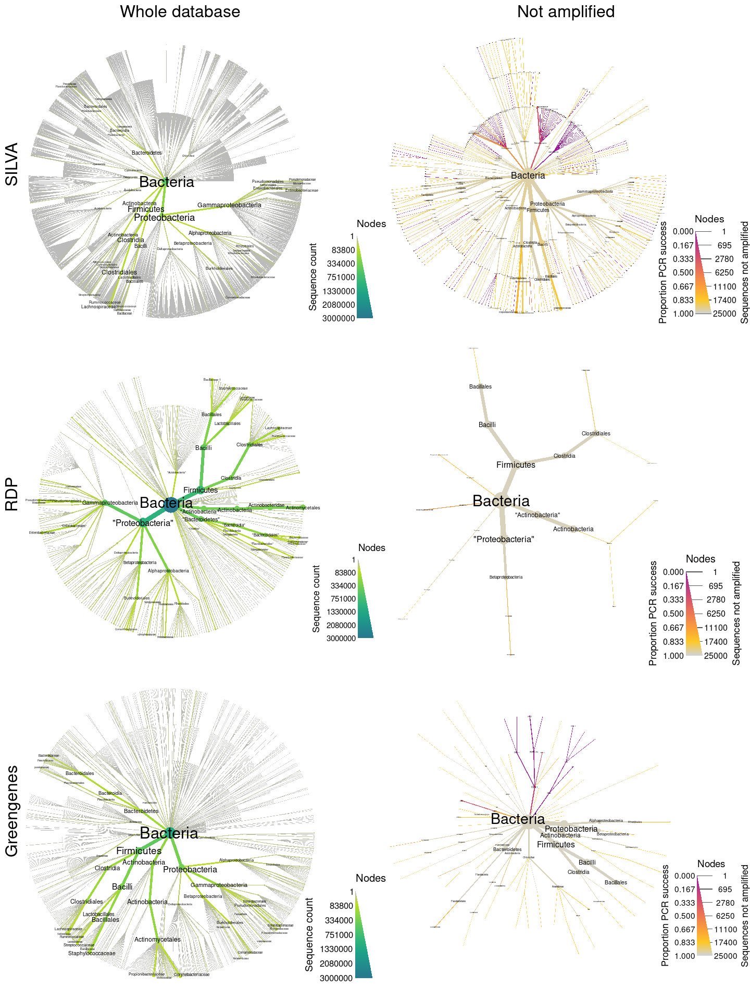

NOTE: This analysis requires at least 10Gb of RAM to run. It uses large files not included in the repository and many steps can take a few minutes to run.
input_folder <- "raw_input" # Where all the large input files are. Ignored by git.
output_folder <- "results" # Where plots will be saved
output_format <- "pdf" # The file format of saved plots
pub_fig_folder <- "publication"
revision_n <- 1
result_path <- function(name) {
file.path(output_folder, paste0(name, ".", output_format))
}
save_publication_fig <- function(name, figure_number) {
file.path(result_path(name), paste0("revision_", revision_n), paste0("figure_", figure_number, "--", name, ".", output_format))
}This analysis just compiles the results from the three seperate analyses corresponding to the three reference databases being compared: RDP (Maidak et al. 2001), SILVA (Quast et al. 2012), and Greengenes (DeSantis et al. 2006). The code below will run those three analyses, but it is not needed if they have been already run independently and it is not run during the rendering of this page.
library(rmarkdown)
render(input = "publication--01--silva.Rmd")
render(input = "publication--02--rdp.Rmd")
render(input = "publication--03--greengenes.Rmd")After the three analyses have been completed, I loaded their results.
load(file.path(output_folder, "silva_data.RData"))
load(file.path(output_folder, "rdp_data.RData"))
load(file.path(output_folder, "greengenes_data.RData"))I then combine plots from the three analyses into a single graph and save the result.
library(gridExtra)
library(grid)
library(metacoder)
combo_plot <- grid.arrange(ncol = 2, nrow = 3,
top = "Whole database Not amplified ",
left = "Greengenes RDP SILVA",
silva_plot_all, silva_plot_pcr_fail,
rdp_plot_all, rdp_plot_pcr_fail,
greengenes_plot_all, greengenes_plot_pcr_fail)
output_path <- file.path(output_folder, "figure_2--16s_database_comparison.pdf")
ggplot2::ggsave(output_path, combo_plot, width = 7.5, height = 10)
file.copy(output_path, "publication/revision_1/figure_4.pdf")## [1] FALSE
sessionInfo()## R version 3.4.4 (2018-03-15)
## Platform: x86_64-pc-linux-gnu (64-bit)
## Running under: Ubuntu 16.04.4 LTS
##
## Matrix products: default
## BLAS: /usr/lib/libblas/libblas.so.3.6.0
## LAPACK: /usr/lib/lapack/liblapack.so.3.6.0
##
## locale:
## [1] LC_CTYPE=en_US.UTF-8 LC_NUMERIC=C LC_TIME=en_US.UTF-8
## [4] LC_COLLATE=en_US.UTF-8 LC_MONETARY=en_US.UTF-8 LC_MESSAGES=en_US.UTF-8
## [7] LC_PAPER=en_US.UTF-8 LC_NAME=C LC_ADDRESS=C
## [10] LC_TELEPHONE=C LC_MEASUREMENT=en_US.UTF-8 LC_IDENTIFICATION=C
##
## attached base packages:
## [1] grid stats graphics grDevices utils datasets methods base
##
## other attached packages:
## [1] gridExtra_2.3 metacoder_0.2.1.9009 taxa_0.3.1 stringr_1.3.1
## [5] glossary_0.1.0 knitcitations_1.0.8 knitr_1.20
##
## loaded via a namespace (and not attached):
## [1] Rcpp_0.12.18 compiler_3.4.4 pillar_1.3.0 plyr_1.8.4 bindr_0.1.1
## [6] tools_3.4.4 ggfittext_0.6.0 digest_0.6.15 gtable_0.2.0 lubridate_1.7.4
## [11] jsonlite_1.5 evaluate_0.11 tibble_1.4.2 pkgconfig_2.0.1 rlang_0.2.1
## [16] bibtex_0.4.2 cli_1.0.0 yaml_2.2.0 bindrcpp_0.2.2 RefManageR_1.2.0
## [21] dplyr_0.7.6 httr_1.3.1 xml2_1.2.0 hms_0.4.2 rprojroot_1.3-2
## [26] tidyselect_0.2.4 glue_1.3.0 R6_2.2.2 fansi_0.2.3 rmarkdown_1.10
## [31] purrr_0.2.5 readr_1.1.1 ggplot2_3.0.0 magrittr_1.5 codetools_0.2-15
## [36] scales_0.5.0 backports_1.1.2 htmltools_0.3.6 assertthat_0.2.0 colorspace_1.3-2
## [41] labeling_0.3 utf8_1.1.4 stringi_1.2.4 lazyeval_0.2.1 munsell_0.5.0
## [46] crayon_1.3.4
DeSantis, Todd Z, Philip Hugenholtz, Neils Larsen, Mark Rojas, Eoin L Brodie, Keith Keller, Thomas Huber, Daniel Dalevi, Ping Hu, and Gary L Andersen. 2006. “Greengenes, a Chimera-Checked 16s rRNA Gene Database and Workbench Compatible with Arb.” Applied and Environmental Microbiology 72 (7). Am Soc Microbiol: 5069–72.
Maidak, Bonnie L, James R Cole, Timothy G Lilburn, Charles T Parker Jr, Paul R Saxman, Ryan J Farris, George M Garrity, Gary J Olsen, Thomas M Schmidt, and James M Tiedje. 2001. “The Rdp-Ii (Ribosomal Database Project).” Nucleic Acids Research 29 (1). Oxford Univ Press: 173–74.
Quast, Christian, Elmar Pruesse, Pelin Yilmaz, Jan Gerken, Timmy Schweer, Pablo Yarza, Jörg Peplies, and Frank Oliver Glöckner. 2012. “The Silva Ribosomal Rna Gene Database Project: Improved Data Processing and Web-Based Tools.” Nucleic Acids Research. Oxford Univ Press, gks1219.